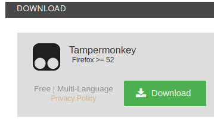
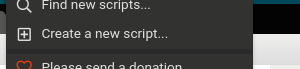

Dajczak skrypt
Witam, chcesz zrobić super śmiesznego trolla?
To zajebiście
Bo mam dla was coś zajebistego... DAJCZAK SKRYPT
Pobierz Dajczak Skrypt
Wersja 1.0 Wersja 2.0 Wersja 3.0 Wersja 4.0
Przetestuj Dajczak Skrypt
Uwaga! Gdy wciśniesz jakikolwiek przycisk, odpali się skrypt, niestety, nie działa on w 100 procentach
Sorki
Jak zainstalować?
Pobierz wtyczkę tampermonkey

Kliknij w ikonkę i kliknij w "Dodaj nowy skrypt"

Wklejasz skrypt, włączasz i masz!
Oryginał zrobiony przez MicroPanda123. Ulepszone przez Enia